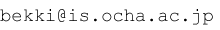

Bekki Laboratory
Site Map:
Top
Project
Publications
Fundings
Academic Careers
Syllabus
NLP Resources:
lightblue (Japanese CCG parser)
ccg2lambda (RTE system)
JSeM (Japanese semantic test suit)
SNS:
[LinkedIn]
[Facebook]
[Researchmap]
[Academia.edu]
[Semantic Scholar]
[ACL Anthology]
[DBLP]
Conferences/Workshops:
LENLS
Links:
戸次研究室
理学部情報科学科
お茶の水女子大学
Books:
「数理論理学」
戸次大介著
東京大学出版会
定価(税込)：￥3,150 (320頁)
第2刷正誤表
「日本語文法の形式理論
－活用体系・統語構造・意味合成－」
戸次大介著
くろしお出版, 日本語研究叢書２４
定価(税込)：￥4,410 (356頁)
戸次研究室
BekkiLab Official Twitter Account
教官名
戸次 大介
(BEKKI Daisuke)
研究分野
数理言語学、理論言語学、計算言語学
・
研究プロジェクト
・
研究室ウェブサイト
所属
お茶の水女子大学
大学院人間文化創成科学研究科
理学専攻
情報科学コース
学部担当講義
数理基礎論
（１年）
位相空間論
（２年）
情報解析学
（３４年・隔年開講）
形式言語論
（３４年・隔年開講）
LAことばと世界11「文法と意味」
（１年～４年）
[授業紹介]
（※リンク先は学内からのみアクセス可）
大学院担当講義
情報構造特論
・演習（隔年開講）
数理科学特論
・演習（隔年開講）
（※リンク先は学内からのみアクセス可）
オフィス
〒112-8610 東京都文京区大塚2-1-1
03-5978-5378/5389
理学部3号館308（以下の地図の建物10）
http://www.ocha.ac.jp/access/ochacampusmap.html
Ｅメール
